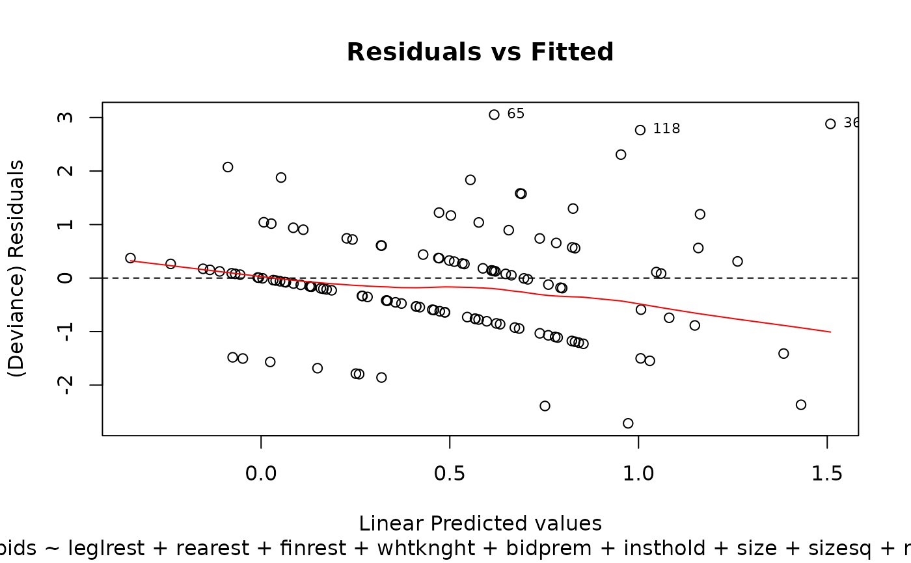
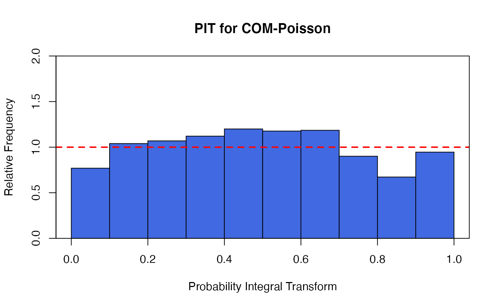
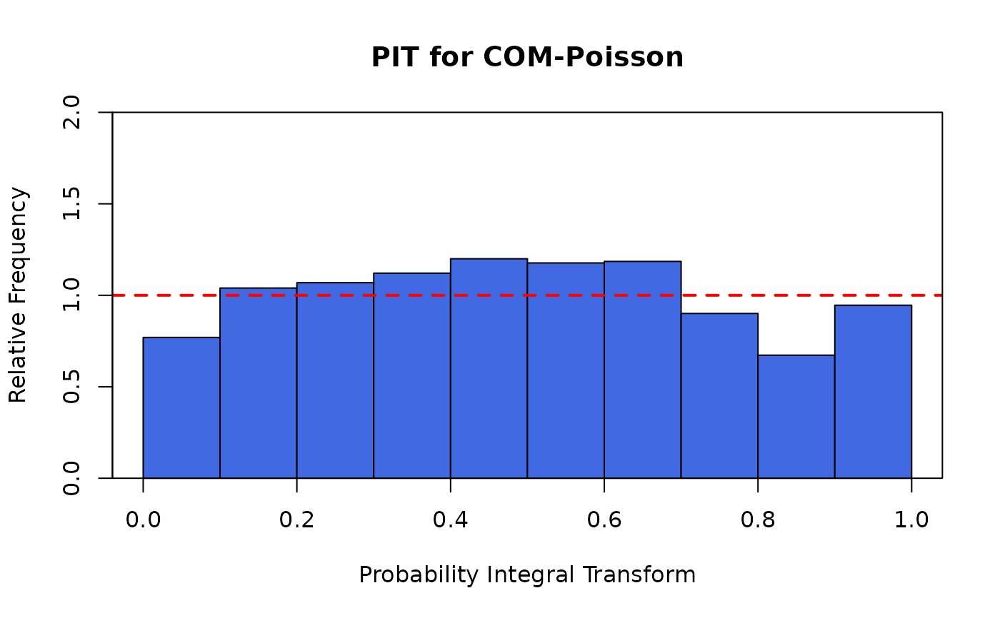
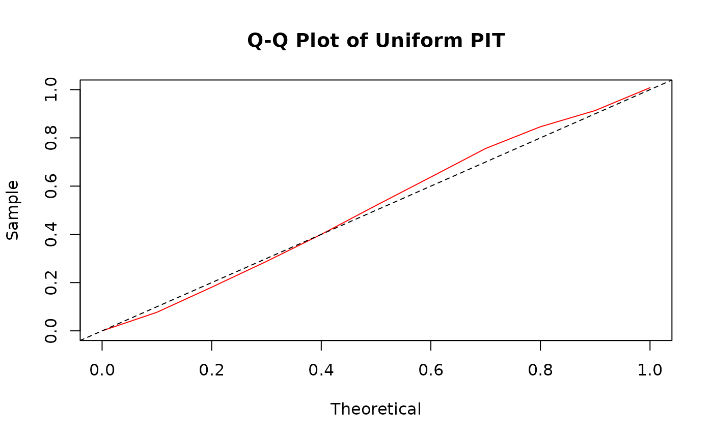

Eight plots (selectable by which) are currently available:
a plot of deviance residuals against fitted values,
a non-randomized PIT histogram,
a uniform Q-Q plot for non-randomized PIT,
a histogram of the normal randomized residuals,
a Q-Q plot of the normal randomized residuals,
a Scale-Location plot of sqrt(| residuals |) against fitted values
a plot of Cook's distances versus row labels
a plot of pearson residuals against leverage.
By default, four plots (number 1, 2, 6, and 8 from this list of plots) are provided.
Arguments
- x
an object class 'cmp' object, obtained from a call to
glm.cmp- which
if a subset of plots is required, specify a subset of the numbers 1:8. See 'Details' below.
- ask
logical; if
TRUE, the user is asked before each plot.- bins
numeric; the number of bins shown in the PIT histogram or the PIT Q-Q plot.
- ...
other arguments passed to or from other methods (currently unused).
Value
x is returned invisibly; plot.cmp is called for its
side effect of drawing diagnostic plots on the current graphics device.
Details
The 'Scale-Location' plot, also called 'Spread-Location' plot, takes the square root of the absolute standardized deviance residuals (sqrt|E|) in order to diminish skewness is much less skewed than than |E| for Gaussian zero-mean E.
The 'Scale-Location' plot uses the standardized deviance residuals while the Residual-Leverage plot uses the standardized pearson residuals. They are given as \(R_i/\sqrt{1-h_{ii}}\) where \(h_{ii}\) are the diagonal entries of the hat matrix.
The Residuals-Leverage plot shows contours of equal Cook's distance for values of 0.5 and 1.
There are two plots based on the non-randomized probability integral transformation (PIT)
using compPIT. These are a histogram and a uniform Q-Q plot. If the
model assumption is appropriate, these plots should reflect a sample obtained
from a uniform distribution.
There are also two plots based on the normal randomized residuals calculated
using compnormRandPIT. These are a histogram and a normal Q-Q plot. If the model
assumption is appropriate, these plots should reflect a sample obtained from a normal
distribution.
See also
compPIT, compnormRandPIT,
glm.cmp and autoplot.
Examples
data(takeoverbids)
M.bids <- glm.cmp(numbids ~ leglrest + rearest + finrest + whtknght
+ bidprem + insthold + size + sizesq + regulatn, data = takeoverbids)
## The default plots are shown
plot(M.bids)



 ## The plots for the non-randomized PIT
plot(M.bids, which = c(2, 3))
## The plots for the non-randomized PIT
plot(M.bids, which = c(2, 3))

